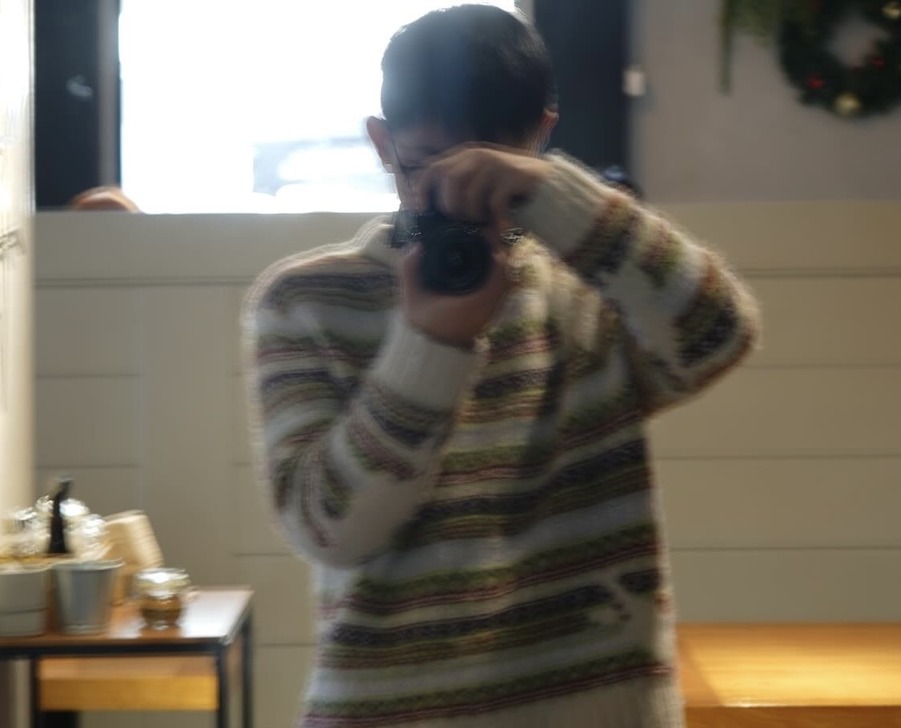

|
Yuan Fang
I'm a master student at Columbia University (Expected 2026). I am working on robotics under the surpervision of Prof. Yunzhu Li and Prof. Hod Lipson.
|

|
{kind=link}
ResearchI'm interested in scalable robot learning methods. To the robotic hardware, I am especially interested in |

|
Eye, Robot: Learning Realistic Robot Gaze From Human Motion Data
Under Review, CORL 2025 Yuhang Hu, Yuan Fang, Junlin Lyu, Xiaoying Shen, Lechen Zhang, Jiong Lin, Judah A Goldfeder, Steven Tian, Hod Lipson Realistic Gaze Transformer (RGT), a Transformer-VAE framework that learns full-head gaze dynamics, including head rotations and eyelid movements, from human motion capture data. |
Projects |
|
|
|
Linux Kernel v6.8
Process Scheduler: Designed and implemented a custom kernel scheduler that optimizes task completion in multi-agent environments. It uses weighted process prioritization and enhanced multi-core load balancing, outperforming the default CFS in both average and tail latency. Performance evaluation was conducted using Page Table Real-Time Inspection: Built a Linux kernel tool for real-time virtual-to-physical address mapping inspection. Introduced a "shadow page table" mechanism and custom syscalls to enable one process to track another’s VMAs and PTEs. Leveraged eBPF and MMU notifiers for low-overhead memory change monitoring. |
Why I changed to Robotics
- Before robotics, I studied finance and operation research at SJTU and quant at CBS.
- At the first year of Columbia, I interned at Prof.Hod's lab. Compared to predicting stocks, I found it more interesting to study, explore and experiment the cutting-edge model interfering with the real world.
- Overall, this quant experience gives me a solid training in statistics.